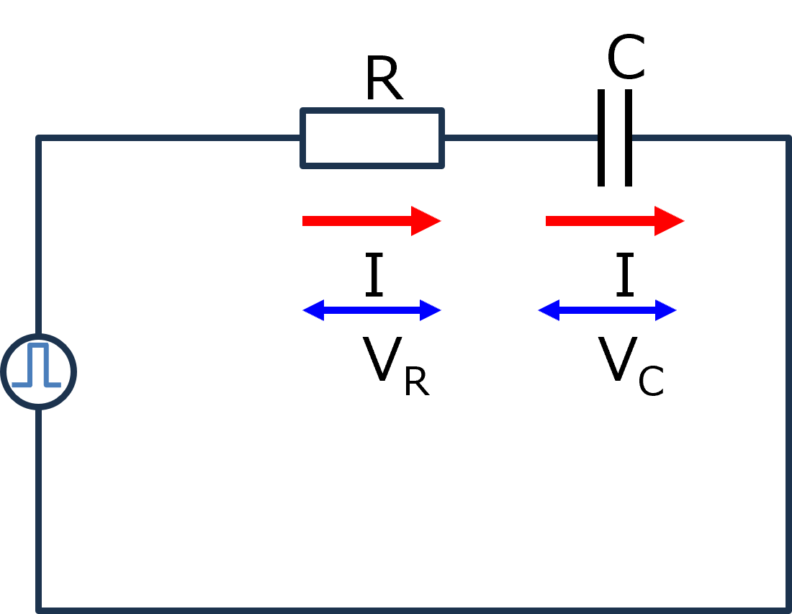
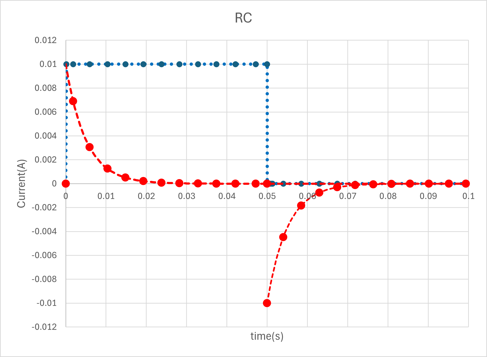
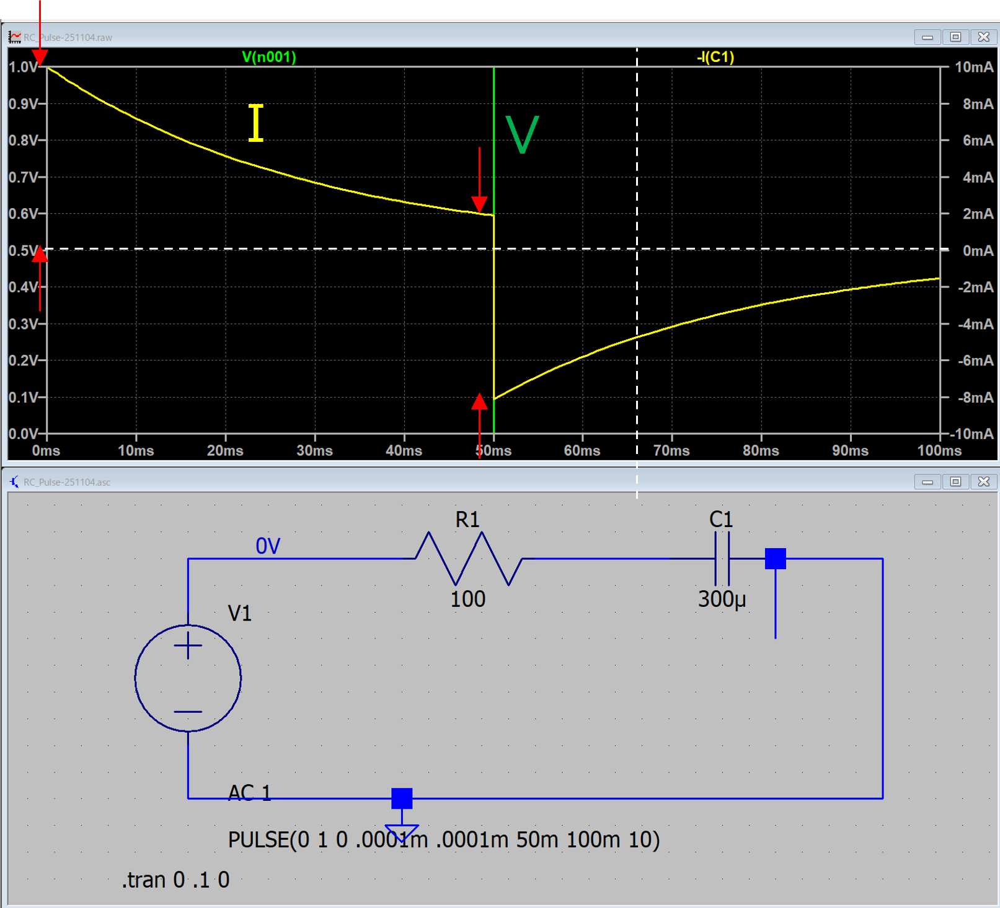
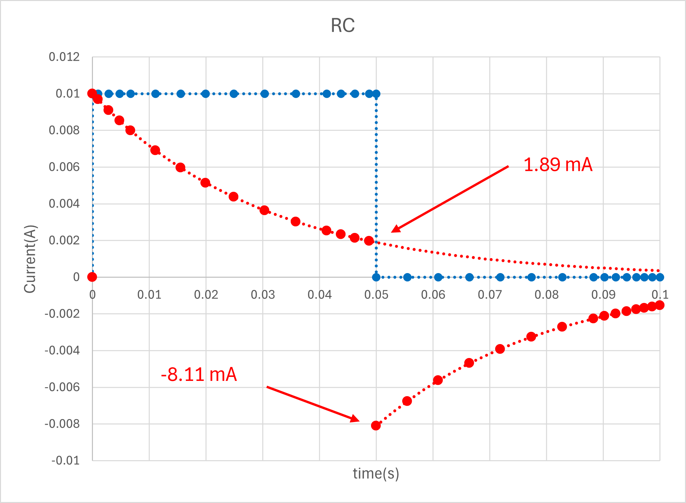

１４－１ー１．ステップ関数（RC回路）
このページからは，入力が正弦波ではなくステップ関数の場合の応答を，VC，から調べていきます．
次は，抵抗，コンデンサが直列の回路について

入力はステップ関数となるので，
\(\Large V(t) \ : \ V_0 \ ( 0 \leq t \leq t_0) \)
\(\Large \hspace{35 pt} : \ 0 \ (t_0 < t) \)
となります．
直列なので，
電流はどこも同じ
電圧は，抵抗+コンデンサ，が電源と等しい
ことから，
\(\Large V_0 = V_R (t) + V_C (t) \)
\(\Large V_R = R \cdot I(t) \)
\(\Large \displaystyle I(t) = C \ \frac{d}{dt} V_C (t) \)
\(\Large \displaystyle V_0 = R \cdot C \cdot \frac{d}{dt} V_C (t) + V_C (t) \)
\(\Large \displaystyle \frac{d}{dt} V_C (t) = - \frac{1}{R \cdot C} V_C (t) + \frac{1}{R \cdot C} \ V_0 \)
なる，微分方程式を解けばいいことになります．
\(\Large 0 \leq t \leq t_0 \)
\(\Large \displaystyle \frac{d}{dt} V_C (t) = - \frac{1}{R \cdot C} V_C (t) + \frac{1}{R \cdot C} \ V_0 \)
定数変化法を使って，
\(\Large \displaystyle V_C(t) = A_0 \cdot exp \left( - \frac{1}{R \cdot C} \ t \right) \)
\(\Large \displaystyle \frac{d}{dt} V_C (t) = A_0' \cdot exp \left( - \frac{1}{R \cdot C} \ t \right) \color{blue}{- \frac{1}{R \cdot C} \cdot A_0 \cdot exp \left( - \frac{1}{R \cdot C} \ t \right)} = \color{blue}{- \frac{1}{R \cdot C} V_C (t)} + \frac{1}{R \cdot C} \ V_0 \)
\(\Large \displaystyle A_0' \cdot exp \left( - \frac{1}{R \cdot C} \ t \right) = \frac{1}{R \cdot C} \ V_0 \)
\(\Large \displaystyle A_0' = \frac{1}{R \cdot C} \ V_0 \cdot exp \left( \frac{1}{R \cdot C} \ t \right) \)
\(\Large \displaystyle A_0 = V_0 \cdot exp \left( \frac{1}{R \cdot C} \ t \right) + D \)
\(\Large \displaystyle V_C(t) = \left\{ V_0 \cdot exp \left( \frac{1}{R \cdot C} \ t \right) + D \right\} \cdot exp \left( - \frac{1}{R \cdot C} \ t \right) \)
\(\Large \displaystyle V_C(t) = V_0 + D \cdot exp \left( - \frac{1}{R \cdot C} \ t \right) \)
t=0 : VC(0) = 0,
\(\Large \displaystyle 0 = V_C(0) = V_0 + D \)
\(\Large \displaystyle D = - V_0 \)
\(\Large \displaystyle V_C(t) = V_0 - V_0 \cdot exp \left( - \frac{1}{R \cdot C} \ t \right) \)
\(\Large \displaystyle V_C(t) = V_0 \left\{ 1- exp \left( - \frac{1}{R \cdot C} \ t \right) \right\} \)
\(\Large \displaystyle I(t) = C \ \frac{d}{dt} V_C (t) = C \cdot V_0 \left( - \frac{1}{R \cdot C} \right) \left\{- exp \left( - \frac{1}{R \cdot C} \ t \right) \right\} = \frac{V_0}{R} exp \left( - \frac{1}{R \cdot C} \ t \right) \)
\(\Large t_0 < t\)
t0以降（ステップ電圧が０になってから）は，t0からの関数を考えると，電圧が０なので，
\(\Large \displaystyle \frac{d}{dt} V_C (t - t_0) = - \frac{1}{R \cdot C} V_C (t - t_0) \)
という単純な微分関数を考えればいいことになります．
ここで，
\(\Large \displaystyle T \equiv t - t_0 \rightarrow dT = dt \)
\(\Large \displaystyle \frac{d}{dt} V_C (T) = - \frac{1}{R \cdot C} V_C (T) \)
\(\Large \displaystyle V_C(T) = A_0 \cdot exp \left( - \frac{1}{R \cdot C} \ T \right) \)
ここで，初期値は，
\(\Large \displaystyle V_C(t_0) = V_0 \left\{ 1- exp \left( - \frac{1}{R \cdot C} \ t_0 \right) \right\} \)
したがって，
\(\Large \displaystyle V_C(T) = V_C(t_0) \cdot exp \left( - \frac{1}{R \cdot C} \ T \right) \)
\(\Large \displaystyle I(T) = C \ \frac{d}{dt} V_C (T) = C \cdot V_C(t_0 \left( - \frac{1}{R \cdot C} \right) \left\{ exp \left( - \frac{1}{R \cdot C} \ T \right) \right\} = - \frac{V_C(t_0)}{R} exp \left( - \frac{1}{R \cdot C} \ T \right) \)
\(\Large \displaystyle I(t) = - \frac{V_C(t_0)}{R} exp \left( - \frac{1}{R \cdot C} \ (t-t_0) \right) \)
t0が十分長ければV0となります．その場合には，
\(\Large \displaystyle I(t) \sim - \frac{V_0}{R} exp \left( - \frac{1}{R \cdot C} \ (t-t_0) \right) \)
となります．
減衰が不十分の場合でも，
t0でV=V0の場合，
\(\Large \displaystyle I(t_{0-before}) = \frac{V_0}{R} exp \left( - \frac{1}{R \cdot C} \ t_0 \right) \)
t0でV=0になると，
\(\Large \displaystyle I(t_{0-after}) = - \frac{V_C(t_0)}{R} exp \left( - \frac{1}{R \cdot C} \ (t_0-t_0) \right) = - \frac{V_C(t_0)}{R} = -\frac{V_0}{R} \left\{ 1- exp \left( - \frac{1}{R \cdot C} \ t_0 \right) \right\}\)
二つの差分は，
\(\Large \displaystyle I(t_{0-before}) - I(t_{0-after})= \frac{V_0}{R} exp \left( - \frac{1}{R \cdot C} \ t \right) + \frac{V_0}{R} \left\{ 1- exp \left( - \frac{1}{R \cdot C} \ t_0 \right) \right\} = \frac{V_0}{R} \)
となり，変化量は，V0/R，と一定の値となります．
実際にCRステップ回路を作ってみてシミュレートしてみました．
条件は，
V0 = 1 V
R = 100 Ω
C = 50 µF
t0 = 50 ms
の場合，
となり，この条件ではステップ電圧の間に十分に電流が0となっています．
振幅は，
\(\Large \displaystyle \frac{V_0}{R} = \frac{1}{100} = 10 \ mA \)
時定数は，
\(\Large \displaystyle \frac{1}{RC} = 100 \times 50 \times 10^{-6} = 5 \ ms \)
となり，

となり，きれいにフィットすることができました．
次に中途半端な減衰の場合，
条件は，
V0 = 1 V
R = 100 Ω
C = 300 µF
t0 = 50 ms
の場合，

振幅は，
\(\Large \displaystyle \frac{V_0}{R} = \frac{1}{100} = 10 \ mA \)
と上記と同じですが，
時定数は，
\(\Large \displaystyle \frac{1}{RC} = 100 \times 300 \times 10^{-6} = 30 \ ms \)
となります．

50msでの電流は，それぞれ，
\(\Large \displaystyle I(t_{0-before}) = \frac{V_0}{R} exp \left( - \frac{1}{R \cdot C} \ t_0 \right) = \frac{1}{100} exp \left( - \frac{1}{100 \cdot 300 \times 10^{-6}} \ 50 \ ms \right) = 1.89 \ mA\)
\(\Large \displaystyle I(t_{0-after}) = -\frac{V_0}{R} \left\{ 1- exp \left( - \frac{1}{R \cdot C} \ t_0 \right) \right\} = -\frac{1}{100} \left\{ 1- exp \left( - \frac{1}{100 \cdot 300 \times 10^{-6}} \ 50 \ ms \right) \right\} = -8.11 \ mA\)
両者の差分は，
\(\Large \displaystyle 1.89 - (-8.11) = 10 \ mA\)
となり，変化量は，V0/R，と一定の値となります．
次は，同様のＲＣ回路を，電荷，ｑ，から考えてみます．です．